Chapter 3: Tests and Results of Falling Bodies
TESTS AND RESULTS
Introduction:
To understand the principles of unity it is imperative that the simple, basic tests which are outlined in the next few pages are completely understood. These were gravity tests, and were conducted at the site of an abandoned mine shaft in Northern Minnesota during the early 1960's. The shaft was two-thousand feet in depth, and the impact plane was monitored by a high speed 8mm camera. In the tests where balls of unlike elements were dropped for comparison, equal weights were achieved by hollowing out the centers of those heavier elements, thus ensuring each sphere was equal in circumference and therefore subject to equal air resistance.
Though our conclusions are founded on literally thousands of tests, we will here present only the most pivotal tests, the results of which are all easily verified by anyone who harbors doubts as to the accuracy of these results or the validity of our conclusions. The importance of the information contained within the following pages cannot be overstated, for in nature the actions of all falling bodies are dictated by the same rules, and this fact is the very essence of unity.
TEST ONE
Two iron balls of equal weight and size were placed six feet apart, and were then dropped simultaneously.
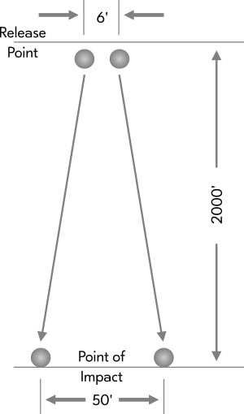Fig. 1
RESULT
The camera clearly indicated that the iron balls impacted at the same instant. Examination of the impact plane showed the balls were fifty feet apart when they impacted.
CONCLUSION
Identical elements of equal weight and size accelerate at exactly the same rate of speed, and repel one another if dropped as individuals (i.e.: with ample space between them at the onset of the drop.)
TEST TWO
Four balls of equal weight and size, but composed of different elements were dropped simultaneously.
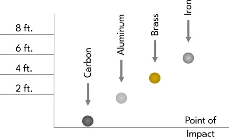Fig. 2
RESULT
Each different element accelerated at a visibly different rate.
CONCLUSION
Different elements accelerate at different rates when falling through a given gravitational field.
TEST THREE
Twenty steel balls of equal weight and size were arranged in a pyramidal formation so that they were touching each other. They were then dropped simultaneously as a unit.
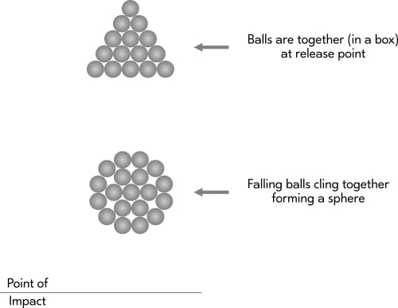Fig. 3
RESULT
The camera shots revealed that as the balls approached the impact plane they were still a unit, but had rearranged themselves from a pyramidal formation into a spherical shape.
CONCLUSION
Individual bodies of like elements that fall in tight formation with other like bodies will always cling together and will always rearrange themselves into a spherical formation.
TEST FOUR
Three iron balls of equal weight and size were arranged as in figure four, six feet apart from one another, and were then dropped simultaneously.
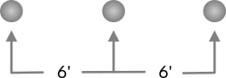Fig. 4
RESULT
The arrangement of the balls upon impact is diagrammed in figure five.
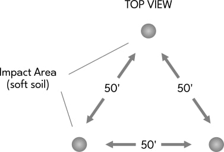Fig. 5
CONCLUSION
Bodies of like elements that fall through a given gravitational field as individuals drift away from each other at equal rates.
TEST FIVE
Twenty steel balls of equal weight and size were arranged and spaced one foot apart, as in figure six. The balls were then dropped simultaneously.
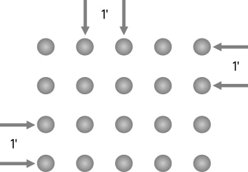Fig. 6
RESULT
Figure seven shows the arrangement of the balls an instant before impact as captured by the camera shot.
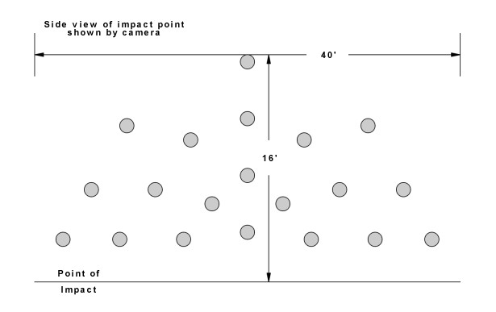Fig. 7
Figure eight illustrates the placement of the balls from the top view upon impact.
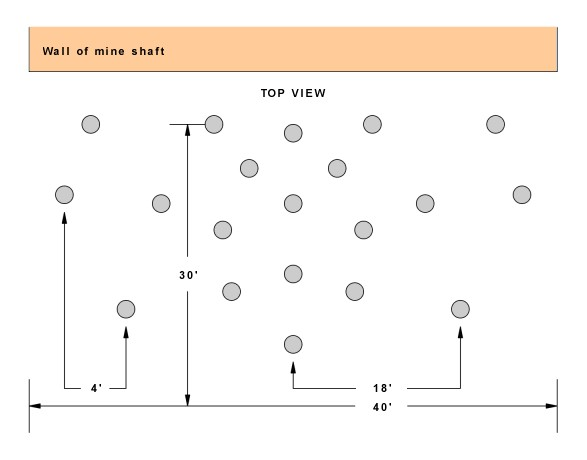Fig. 8
CONCLUSION
Individual bodies that fall as a mass in loose formation drift apart on a 360° horizontal plane and on an 180° vertical plane simultaneously.
TEST SIX
Two iron balls of equal weight and size were parted around the circumference as in figure nine. They were then placed in the dropbox so that the lines were exactly horizontal, and then dropped simultaneously.
![An illustration showing two balls being dropped 2000 ft. At the top the balls are 6 ft apart. At the 1500 mark the ball on the left goes further left, the other in the opposite direction. Each ball has an arrow drawn around it pointing counter-clockwise. Both balls land 50 ft apart. The illustration states: 'repulsive force and body rotation become apparent at approximately 1500 ft of fall.' and 'Rotation is on a horizontal axle. That axle extends from the magnetic N. pole to the magnetic S. pole and on that axle the body rotates to the east.'](./img/fig09.jpg)
Fig. 9
RESULT
An instant before impact the camera image showed that the painted lines were no longer in their original position. After impact the two balls rolled away in the same direction.
CONCLUSION
All bodies will develop a given rotation. This is true whether one speaks of a single body, a mass of bodies in loose formation, or a mass of bodies in close formation. These rotating bodies, if dropped as individuals (apart from each other) repel one another at equal rates.
TEST SEVEN
Iron balls of equal weight and size were suspended on six foot arms and were rotated in a clockwise direction, horizontally, around a pivot point. An antenna was placed in close tolerance to the circumference of the rotating balls. Attached to the antenna were very sensitive detection devices, which were in turn connected to an oscilloscope.
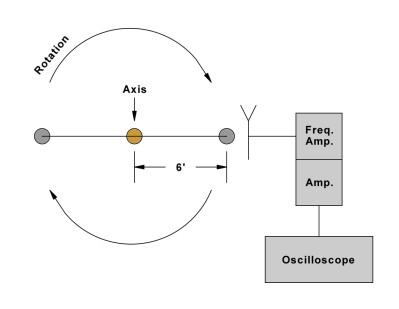Fig. 10
RESULT
The oscilloscope display showed donut shaped forms which appeared at the instant a ball passed the antenna, as shown in figure eleven. The o-scope appeared to not retain any stigmation.
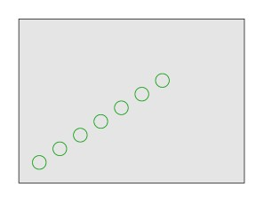Fig. 11
CONCLUSION
A body in motion produces a field and/or force which appears donut shaped on an oscilloscope display. This field (and/or force) has not been identified by the scientific community to date.
TEST EIGHT
An identical apparatus to that used in test seven was constructed. The two units were placed parallel to each other and were timed so that as the arms rotated, the balls would pass within 1/4 inch of each other at point X.
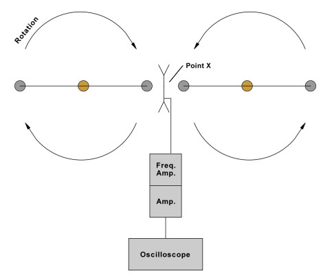Fig. 12
RESULT
Each time the two balls met and passed each other at point X, a tremendous thump was heard as the test stand (a six inch diameter shaft mounted in concrete) physically reacted in a violent manner.
As the balls approached each other in their rotation the oscilloscope showed donut shapes as in test seven. At the instant the balls were closest to each other in their rotation the oscilloscope showed sine waves. As the balls again began to move away from each other in their rotation, the donut shapes reappeared on the o-scope display, as shown in figure thirteen.
![The Illustration shows a rectangle with 7 circles drawn inside it. The locations of the circles are approximately (x, y axis) x1y1; x2y2; x3y3, etc going slightly up to the right. At circle number 7, in approximately the middle of the rectangle, a series of four sine waves are drawn, from left to right. Then looking further from left-to-right, we see another set of 7 circles in positions: x11y7; x12y6; x13y5, x14y4, etc. to the bottom right corner. It also has a 'Note : four single trace scopes were employed. The results shown in figure 11 were obtained by superimposing many drawings from the o-scope readings into a single Illustration.'](./img/fig13.jpg)
Fig. 13
CONCLUSION
The field (and/or force) which surrounds a body in motion repels the field (and/or force) which surrounds a second body in motion. The field (and/or force) that surrounds a body in motion produces an energy which is not polarized. It appears as a bubble (donut or circle) on an oscilloscope display. When this field (and/or force) is made to collide with the field (and/or force) that surrounds a second body, the bubbles break, then unite with each other to produce polarized energy, i.e., sine waves.
NOTE
Test eight was repeated with many variations in the effort to isolate the cause of the "thump". During the course of these tests it was found that an increase in the distance between the two balls at point x would result in a decrease in the intensity of the thump. Even in a test where the balls came no closer to one another than six inches, however, the thump continued to be a notable factor.
In other variations of this basic test, many different RPMs were employed. It was found that the thumping increased progressively as the R.P.M. increased. It was then discovered that the intensity of the thumping became progressive at the rate of velocity squared, and that with an increase of the distance between the balls at point x the thumping decreased at the rate of distance squared.
COMMENT:
All of the tests and results presented in this section were run numerous times and under varying conditions, and the results are correct and reproducible. This means that Galileo's work with falling bodies - the cornerstone of physicsPhysics: the science that deals with matter, energy, motion and force - is faulty. Newton based his work on that of Galileo, as Einstein and those who've followed him have built on Newton. The inescapable conclusion is that "if" Galileo's laws are flawed, then the technologies upon which the societies of planet earth have become dependent are based on faulty theory. As a first step toward correcting this situation these tests must be reproduced and a public debate initiated.